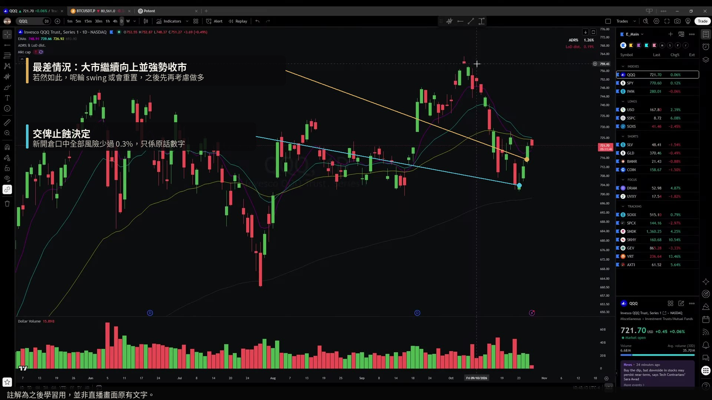

概要
讓止蝕工作，並預先講最差情況
1:26:28 佢話今日就講到呢度，會讓止蝕來決定，讓倉位為佢工作。最差情況係：如果大市繼續向上，佢希望見到好好嘅向上跟進並且強勢收市；噉嘅話，呢輪 swing 或會有一個頗好嘅重置，之後先再準備未來幾日嘅做多。但又強調呢個係最差情況。新開倉口中全部風險只係少過 0.3%，所以覺得安心。最後多謝大家，下次再見。
0.3% 只係原話數字，畫面睇唔到實際風險或者倉位。唔當可複製規則。
圖一
最差情況：繼續向上並強勢收市
直播 1:27:10

原話
So I think that's it for today. I'm just going to let my stop to decide, to let them work for me. And if the worst case scenario, if the market is going to continue higher, I'd like to get a really good follow through to the upside and close strongly. And I think that will be a pretty good reset for this swing and maybe prepare for the longs in the coming days. But yeah, that's the worst case scenario. Yeah, but the risk is pretty, like my new trades, I think it's only less than 0.3% for all of these trades. So I'm feeling pretty comfortable with them. Thank you guys for coming, and we'll see you in the next one.
所以我覺得今日就講到呢度。我將會讓止蝕來決定，讓佢哋為我工作。如果係最差情況，大市繼續向上，我希望見到好好嘅向上跟進，並且強勢收市。我覺得噉會係呢輪 swing 一個頗好嘅重置，或者準備未來幾日嘅做多。不過係，呢個係最差情況。但風險其實，我呢啲新開倉，我覺得全部加埋只係少過 0.3%。所以我對佢哋覺得幾安心。多謝大家到來，我哋下次再見。
Whisper 把 stop 聽成 stock。0.3% 係口中全部新開倉嘅風險總和，唔當單筆或者可複製規則。
點樣讀
收結係管理而唔係新訊號：交俾已經放好嘅止蝕。最差情況預先講清楚，而且係大市強勢向上，先考慮呢輪淡倉 swing 重置。
「準備做多」只係最差情況之下嘅後續，唔係而家已經轉倉。
附註
注意事項
- 0.3% 只保留原話，畫面睇唔到實際風險、止蝕價或者損益。
- 收結前後仲掃過 SOXS、DRAM 等，冇新嘅獨立分析點，唔另開一科。